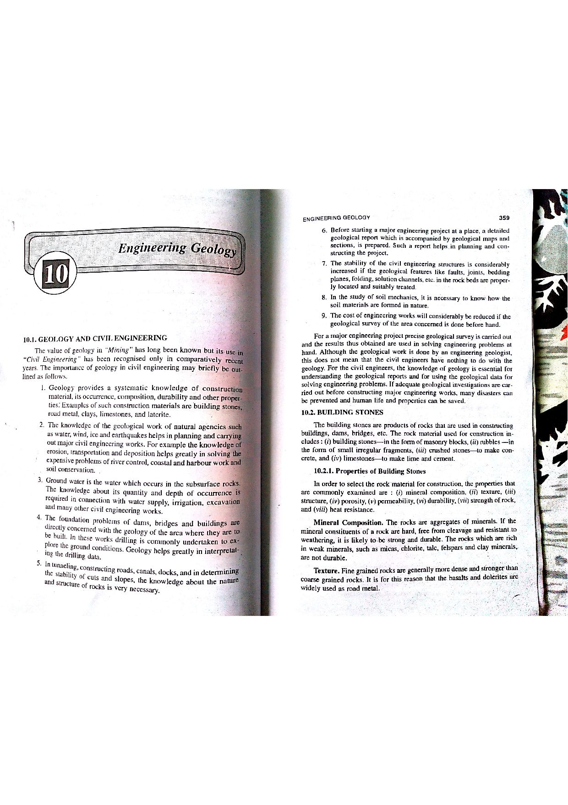

Q129: In-Situ Field Geotechnical Testing vs. Laboratory Tensile Methods
In engineering geology, site characterization, and foundation geotechnics, experimental investigation methods are rigorously categorized into two distinct operational domains:
- In-Situ Field Testing: Tests conducted directly within the natural, in-place ground formation at the project site. These evaluate rock masses, soils, and groundwater regimes under undisturbed ambient confining stresses, in-situ pore pressures, natural moisture states, and macro-structural discontinuities (bedding, joints, faults).
- Laboratory Specimen Testing: Tests performed on discrete cores, blocks, or reconstituted samples extracted from the ground, transported to a laboratory, and machined to precise dimensions to be broken in benchtop mechanical testing machines.


1. Standard Penetration Test (SPT — IS: 2131 / ASTM D1586)
The most widely executed in-situ dynamic penetration borehole test worldwide. A standardized split-barrel sampler (outside diameter $50.8\text{ mm}$, inside diameter $34.9\text{ mm}$) is seated at the base of a borehole and driven into the natural soil by a drop hammer weighing $63.5\text{ kg}$ ($140\text{ lbs}$) falling through a free-fall height of $760\text{ mm}$ ($30\text{ inches}$).
- Driven in three successive $150\text{ mm}$ increments (total $450\text{ mm}$).
- The first $150\text{ mm}$ is considered the seating drive.
- The sum of hammer blows required for the subsequent two $150\text{ mm}$ intervals ($300\text{ mm}$ total penetration) is recorded as the Standard Penetration Resistance or $N$-value.
2. Dutch Cone Penetrometer Test (CPT / CPTu — IS: 4968 / ASTM D5778)
A continuous static sounding method where a standardized cylindrical steel probe with a $60^\circ$ apex angle cone ($10\text{ cm}^2$ projected base area) and a $150\text{ cm}^2$ friction sleeve is pushed smoothly into the ground at a steady rate of $20\text{ mm/s}$ using hydraulic thrust rams:
- Directly measures cone tip resistance ($q_c$), local sleeve friction ($f_s$), and dynamic pore-water pressure ($u$) via piezocone (CPTu).
- Calculates the Friction Ratio ($R_f = [f_s / q_c] \times 100\%$) to identify continuous stratigraphic soil behavior types (SBT) in real time without sampling.
3. Water Pressure Test (Packer / Lugeon Test — IS: 5529 / ISRM)
The quintessential in-situ hydrogeological test executed in bedrock boreholes to evaluate rock mass permeability, fissure connectivity, and grouting requirements for dam foundations and tunnels:
- Inflatable pneumatic or mechanical rubber packers isolate a test section (typically $3.0\text{ to } 5.0\text{ m}$ length) within the borehole.
- Water is pumped into the isolated rock interval under controlled stepped pressures ($P$).
- Permeability is expressed in Lugeon Units (Lu): $$\text{1 Lugeon (1 Lu)} = 1.0\text{ liter of water per minute per meter of test stage at an effective pressure of } 10\text{ bars} \approx 1.3 \times 10^{-7}\text{ m/s}$$
Physical Impossibility as an In-Situ Field Penetration Test
The Direct Pull Test (Uniaxial Tension Test) is strictly a laboratory specimen test:
- It requires an intact rock cylinder diamond-cored from the site, transported to a climate-controlled laboratory, trimmed, and precision-machined into a dog-bone or cylindrical shape.
- Heavy steel pulling caps are bonded to the polished ends with high-tensile structural epoxy resins (cured for 24–48 hours).
- The specimen is mounted in a motorized universal laboratory testing frame and subjected to coaxial tensile pull until rupture occurs.
It is physically impossible to carry out a "direct pull test" as an in-situ field sounding test on undisturbed soil or rock mass in natural in-place ground. Therefore, including the Direct Pull Test within a list of in-situ field testings is technically incorrect, making Option (C) the correct answer.
- (A) Standard Penetration Test (SPT)
- (B) Dutch Cone Penetrometer Test
- (C) Direct Pull Test
- (D) Water Pressure Test
The Standard Penetration Test (IS: 2131; ASTM D1586) is the quintessential in-situ borehole penetration test. It is carried out directly in boreholes under natural in-place ground conditions using a $63.5\text{ kg}$ hammer and split-spoon sampler. Because it is a legitimate in-situ field test, it is not the incorrect item sought by the prompt.
The Dutch Cone Penetrometer Test (CPT, IS: 4968; ASTM D5778) is a premier static in-situ field sounding method. A conical penetrometer is pushed directly into undisturbed ground from a mobile hydraulic reaction truck to measure tip resistance and skin friction in-situ. Because it is an authentic in-situ field test, it cannot be the answer.
The Direct Pull Test (uniaxial tensile test) is NOT an in-situ field test. It is strictly a destructive laboratory specimen test performed on diamond-drilled cylindrical rock or concrete cores whose ends are glued to steel pulling fixtures with epoxy inside a laboratory load frame. It cannot be conducted directly in the natural undisturbed ground. Therefore, its inclusion among in-situ field tests is incorrect, making (C) the correct choice.
The Water Pressure Test (Lugeon packer test, IS: 5529) is a standardized in-situ field hydrogeological permeability test executed in drill holes beneath dam foundations and tunnels to measure fissure conductivity in natural bedrock under hydrostatic pressure stages. Because it is a valid in-situ field test, it is not the target of the question.
| Testing Category | Test Name | Governing Standard | Physical Medium & Environment | Primary Engineering Parameter |
|---|---|---|---|---|
| In-Situ Field | Standard Penetration Test (SPT) | IS: 2131 / ASTM D1586 | Borehole base in natural in-place soil | $N$-value; relative density ($D_r$), friction angle ($\phi$), allowable bearing pressure. |
| In-Situ Field | Cone Penetration Test (CPT / CPTu) | IS: 4968 / ASTM D5778 | Continuous static probe in natural ground | Cone resistance ($q_c$), sleeve friction ($f_s$), undrained shear strength ($c_u$). |
| In-Situ Field | Water Pressure Test (Lugeon) | IS: 5529 / ISRM | Borehole rock stage isolated by packers | Hydraulic conductivity ($k$), Lugeon value ($\text{Lu}$), fissure openness, groutability. |
| In-Situ Field | Plate Load Test (PLT) | IS: 1888 / ASTM D1194 | Excavated pit base on undisturbed soil/rock | Modulus of subgrade reaction ($k_s$), ultimate bearing capacity ($q_{\text{ult}}$). |
| In-Situ Field | Field Vane Shear Test | IS: 4434 / ASTM D2573 | Pushed into undisturbed soft clay at depth | In-situ undrained shear strength ($c_u$) and sensitivity ($S_t$). |
| Laboratory Only | Direct Pull Test (Uniaxial Tension) | ISRM 1978 / ASTM D2936 | Machined core glued to steel grips in load frame | Direct Uniaxial Tensile Strength ($\sigma_t$). |
| Laboratory Only | Brazilian Disc Splitting Test | IS: 10082 / ASTM D3967 | Machined core disc loaded diametrically in press | Indirect Tensile Strength ($\sigma_t = \frac{2P}{\pi D t}$). |
During an SPT test at depth $z = 6.0\text{ m}$, the recorded blow counts for three consecutive $150\text{ mm}$ drive increments are: Increment 1 ($0 - 150\text{ mm}$): $6\text{ blows}$; Increment 2 ($150 - 300\text{ mm}$): $9\text{ blows}$; Increment 3 ($300 - 450\text{ mm}$): $12\text{ blows}$. Determine: (a) which increment is the seating drive, and (b) the reported field SPT $N$-value.
1. Seating drive: In accordance with IS: 2131 and ASTM D1586, the first $150\text{ mm}$ drive ($6\text{ blows}$) is designated as the seating drive to seat the sampler past any loose borehole cuttings and bottom slough. It is discarded from the $N$-value.
2. Field $N$-value: The sum of the blows for the second and third $150\text{ mm}$ increments: $$N = N_{\text{inc2}} + N_{\text{inc3}} = 9 + 12 = 21\text{ blows/300 mm}$$ The recorded field penetration resistance is $N = 21$.
At a test depth $z = 10.0\text{ m}$, the field blow count is $N = 18$. The drill rig utilizes a safety hammer with an energy efficiency of $60\%$ ($C_E = 1.0$), borehole diameter correction $C_B = 1.0$, rod length factor $C_R = 0.95$, and standard sampler without liner $C_S = 1.0$. The effective vertical overburden stress is $\sigma_{v0}' = 150\text{ kPa}$. Using the Liao and Whitman (1986) overburden correction formula: $$C_N = \sqrt{\frac{100\text{ kPa}}{\sigma_{v0}'}} \quad (\text{with } C_N \le 1.7)$$ Calculate: (a) $N_{60}$, (b) overburden correction factor $C_N$, and (c) fully corrected $(N_1)_{60}$.
1. Compute energy and setup corrected $N_{60}$: $$N_{60} = N \times C_E \times C_B \times C_R \times C_S = 18 \times 1.0 \times 1.0 \times 0.95 \times 1.0 = 17.1$$ 2. Compute overburden correction factor $C_N$: $$C_N = \sqrt{\frac{100}{150}} = \sqrt{0.6667} = 0.8165$$ 3. Compute normalized $(N_1)_{60}$: $$(N_1)_{60} = C_N \times N_{60} = 0.8165 \times 17.1 = 13.96 \approx 14$$
An SPT test is conducted below the groundwater table in saturated fine silty sand. The measured blow count after overburden correction is $N' = 27$. According to IS: 2131 (Terzaghi-Peck dilatancy correction), if $N' > 15$, apply: $$N'' = 15 + \frac{1}{2}(N' - 15)$$ Calculate the dilatancy-corrected blow count ($N''$) and explain the physical cause.
1. Apply dilatancy formula: $$N'' = 15 + \frac{1}{2}(27 - 15) = 15 + \frac{1}{2}(12) = 15 + 6 = 21$$ 2. Physical Cause: When dense fine sands or silts below the water table are rapidly sheared by dynamic hammer impact, the soil skeleton tends to dilate (expand). Rapid dilation under undrained conditions generates negative transient pore-water pressures ($-\Delta u$), which temporarily increases effective stress and artificially inflates the field blow count. The formula removes this artificial temporary resistance.
A CPT sounding in soft normally consolidated clay records a cone tip resistance $q_c = 1.25\text{ MPa}$ ($1250\text{ kPa}$) at depth $z = 8.0\text{ m}$. The total vertical overburden stress is $\sigma_{v0} = 145\text{ kPa}$. Using the empirical cone factor equation: $$c_u = \frac{q_c - \sigma_{v0}}{N_k}$$ Taking the empirical cone factor $N_k = 15.0$, determine the undrained shear strength ($c_u$) of the clay.
1. Net cone resistance $q_{\text{net}}$: $$q_{\text{net}} = q_c - \sigma_{v0} = 1250\text{ kPa} - 145\text{ kPa} = 1105\text{ kPa}$$ 2. Compute undrained shear strength $c_u$: $$c_u = \frac{1105\text{ kPa}}{15.0} = 73.67\text{ kPa}$$ The clay possesses an in-situ undrained shear strength of $73.7\text{ kPa}$ (Medium Stiff Clay).
At depth $z = 12.0\text{ m}$, a piezocone penetration test measures a cone tip resistance $q_c = 8.0\text{ MPa}$ and a sleeve friction $f_s = 64.0\text{ kPa}$ ($0.064\text{ MPa}$). Calculate: (a) the friction ratio ($R_f$), and (b) identify the likely soil behavior type based on Robertson's CPT classification chart.
1. Calculate Friction Ratio ($R_f$): $$R_f = \left(\frac{f_s}{q_c}\right) \times 100\% = \left(\frac{0.064\text{ MPa}}{8.0\text{ MPa}}\right) \times 100\% = 0.80\%$$ 2. Soil Behavior Type (SBT): High tip resistance ($q_c = 8.0\text{ MPa}$) coupled with a very low friction ratio ($R_f = 0.80\% < 1.0\%$) is diagnostic of Clean Sand to Silty Sand (Robertson Zone 6). (Clays exhibit low $q_c$ and high $R_f > 3 - 5\%$).
In an exploratory borehole for a concrete dam foundation, a water pressure test is performed in a jointed quartzite interval of length $L = 4.0\text{ m}$. At an effective gauge test pressure of $P = 1.0\text{ MPa}$ ($10\text{ bars}$), the steady water injection rate measured by a flow meter is $Q = 24.0\text{ liters/minute}$. Calculate: (a) the Lugeon value ($\text{Lu}$), and (b) the approximate hydraulic conductivity ($k$) in $\text{m/s}$.
1. Calculate Lugeon value: $$\text{Lu} = \frac{Q}{L \cdot \left(\frac{P}{10\text{ bar}}\right)} = \frac{24.0\text{ L/min}}{4.0\text{ m} \times 1.0} = 6.0\text{ Lugeons}$$ 2. Approximate hydraulic conductivity: Since $1\text{ Lugeon} \approx 1.3 \times 10^{-7}\text{ m/s}$: $$k \approx 6.0 \times (1.3 \times 10^{-7}\text{ m/s}) = 7.8 \times 10^{-7}\text{ m/s}$$ Engineering Implication: Values between $1\text{ and } 10\text{ Lu}$ indicate minor joint seepage requiring shallow consolidation grouting.
An in-situ field vane shear test (IS: 4434) is conducted in soft sensitive marine clay. The four-bladed rectangular vane has a diameter $D = 65\text{ mm}$ ($0.065\text{ m}$) and height $H = 130\text{ mm}$ ($0.130\text{ m}$, ratio $H/D = 2.0$). The maximum torque recorded at shear failure is $T = 38.5\text{ N}\cdot\text{m}$. Assuming uniform shear stress distribution on both ends and the cylindrical mantle, calculate the in-situ undrained shear strength ($c_u$) of the clay.
1. Use the standard vane shear formula: $$T = \pi c_u D^2 \left(\frac{H}{2} + \frac{D}{6}\right)$$ 2. Compute geometric factor: $$\frac{H}{2} + \frac{D}{6} = \frac{0.130}{2} + \frac{0.065}{6} = 0.0650 + 0.01083 = 0.07583\text{ m}$$ $$D^2 \left(\frac{H}{2} + \frac{D}{6}\right) = (0.065)^2 \times 0.07583 = 0.004225 \times 0.07583 = 3.2038 \times 10^{-4}\text{ m}^3$$ 3. Solve for $c_u$: $$c_u = \frac{T}{\pi \times 3.2038 \times 10^{-4}} = \frac{38.5}{1.0065 \times 10^{-3}} = 38,251\text{ N/m}^2 = 38.25\text{ kPa}$$
An in-situ Plate Load Test (IS: 1888) is carried out at the founding level of a proposed bridge pier using a square rigid steel plate of size $300\text{ mm} \times 300\text{ mm}$. A sustained bearing pressure of $q = 250\text{ kPa}$ produces a steady settlement of $s = 2.5\text{ mm}$ ($0.0025\text{ m}$). Calculate: (a) the modulus of subgrade reaction for the test plate ($k_{s(300)}$) in $\text{MN/m}^3$, and (b) estimate the modulus of subgrade reaction for an actual square footing of width $B = 1.5\text{ m}$ on clay ground.
1. Plate subgrade reaction modulus $k_{s(300)}$: $$k_{s(300)} = \frac{q}{s} = \frac{250\text{ kPa}}{0.0025\text{ m}} = 100,000\text{ kN/m}^3 = 100\text{ MN/m}^3$$ 2. Subgrade modulus for full-scale footing on cohesive clay ground: For clay, Terzaghi's scaling relation gives $k_s(B) = k_{s(300)} \times \left(\frac{0.30\text{ m}}{B}\right)$: $$k_s(1.5\text{ m}) = 100\text{ MN/m}^3 \times \left(\frac{0.30}{1.50}\right) = 100 \times 0.20 = 20.0\text{ MN/m}^3$$